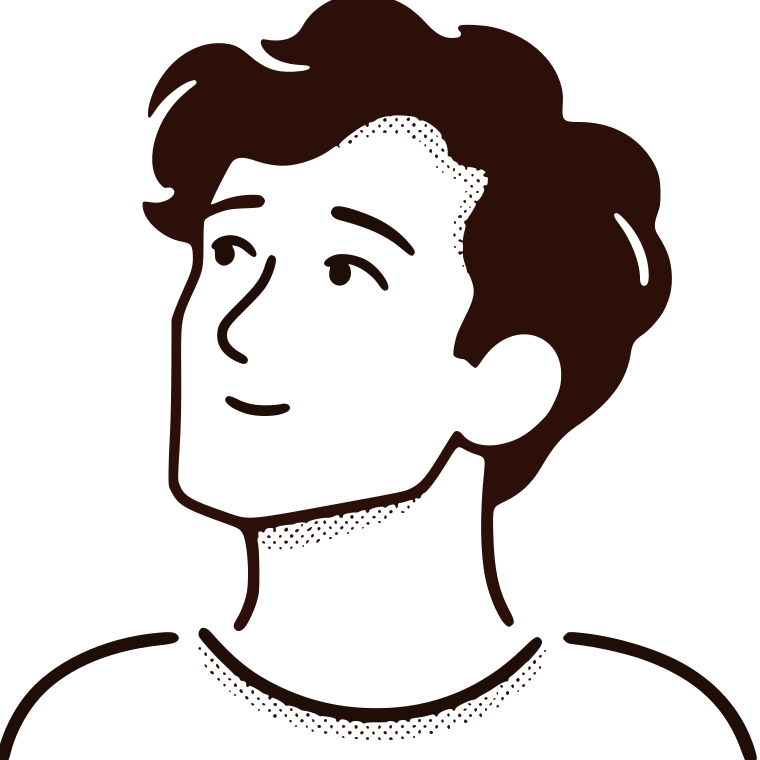
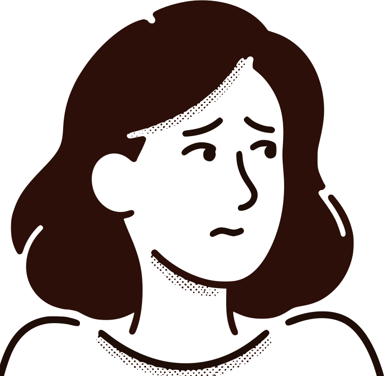
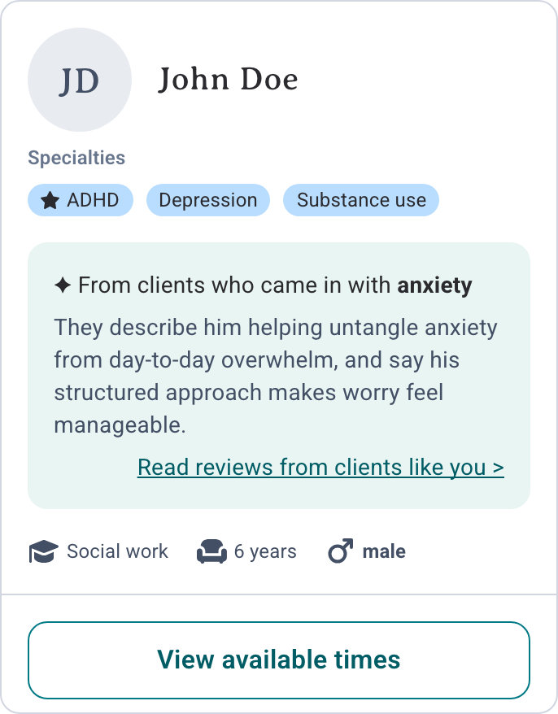
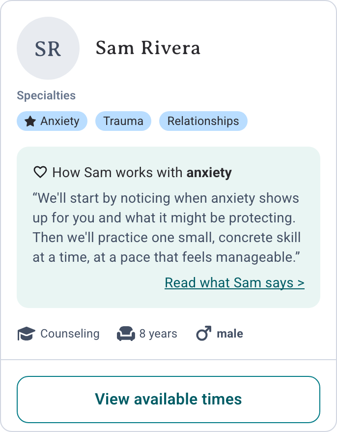

Talkspace Provider Reviews
Helping members see what it’s like to work with a provider before they book.
Overview
During onboarding, Talkspace matches every member with a provider automatically. As a product design intern at Talkspace, I worked on what members see when they choose a provider. I wanted them to get a feel for what a session might be like before they booked. Could reviews help someone pick a therapist without making providers with few reviews look like worse options?
We started with a link to a reviews page, which is now in development. After the handoff, I designed and tested a card that gives providers with few or no reviews space to explain how they work.
Problem
40%of members who were matched automatically during onboarding didn’t make it to a first session, although that was the matching method that performed best.
Solution
Show members what clients say about each provider, so they can choose with confidence and more of them make it to a first session.
Before
Intake Auto-match Book a first session First sessionWith this project
Intake Auto-match Choose your provider Read what clients say Read what clients say Book a first session First sessionBefore
With this project
or
01 · The data
More members made it to a first session when they picked their own provider
Among members who switched to a provider they picked, 73–76% completed a first session. People who go out of their way to switch may already be more likely to show up, so I couldn’t say picking their own provider was what made them more likely to attend. But it made me want to look at what members needed to make that choice.
Every provider card listed the same things: specialties, years of experience, a degree, and open times. None of it told me what a session with that person would actually be like. I thought reviews from people who’d already worked with them could fill that gap.
Share of members who completed a first session, by matching method. Source: Talkspace data team, July 2026.
02 · Exploration
I tried three ways to show reviews on the card
Clients leave a star rating with each review, but I chose not to show it on the card. I showed what they wrote instead. If you see 4.4 stars next to five, it’s easy to skip over someone before you’ve read a word about what it’s like to work with them.
I tested three versions with 18 people over three rounds. All 18 said the reviews strongly influenced who they’d choose.

“If they were able to help someone else with the same issues, hopefully they could help me.”
Test participant

AI summary
The quickest to read, if you trust the summary.
Needs enough reviews to summarize

Review preview
You hear from a real client, but you only hear from one.
Needs one review long enough to say something

Review snippets
You hear from more people, but the quotes can feel cherry-picked.
Needs several reviews with lines worth quoting
03 · The constraint
Then our PM found that only 8% of providers had enough reviews to fill the card.
Most providers, 65% of them, had just one review. And a lot of reviews were blank, or as short as “Aaron IS GREAT.” If every card showed a review preview, most cards would look empty, and the newer providers would look worst of all. I needed a design that worked whether someone had 15 reviews or none.
1,461 providers in the five-star review export. Eight percent had at least three meaningful written reviews.
Reviews from the export
“Aaron IS GREAT”
No written text
04 · The MVP
We started with a link to the full reviews page
Our PM and I put a Client Testimonials link in the same spot on every card for providers with reviews. Members could still read what clients wrote, and providers with only one or two reviews wouldn’t look any different from those with 15. It meant one more tap for members, but we could give them access to reviews with the data we already had.
I led a design review with PMs, engineers, and data researchers. Together we changed the link label from Read 15 reviews to Client Testimonials so it wouldn’t show a review count. We also decided to hide the link for providers with no reviews.
Link label


05 · After the handoff
What should the card show if a provider has no reviews?
The link made sense with the reviews Talkspace had, but it left providers with no reviews with nothing to show on their card. After the handoff, I went back to the card. If we could eventually show reviews there, what would a member see when they got to a provider with only one review, or none?
1How many reviews a provider has
I put a green block in the same spot on every card.
An AI summary of what those clients said. Her page lists reviews about the member’s concern first.
A summary would only rephrase them, so Priya explains how she works. Her two reviews follow on her page.
Sam gets the same space to explain how he works. His page also shows training verified by Talkspace.
2What the member came in for
I used the member’s intake concern to choose which reviews to summarize.

I’m here for my anxiety.

John doesn’t list anxiety as a specialty, but his green block summarizes clients who came in with it.
06 · Testing the redesign
Sam had no reviews. Four people said they’d book him.
I tested the redesign with nine people in October. I asked each person to pick a therapist from five cards, then tell me what they noticed and why they chose that person.
What worked

4 of 9
would book Sam, who had no reviews
Sam’s description helped people picture a session with him. As one person said, “I can imagine what the sessions would look like.” Another person picked Priya, who had only a few reviews, because her card explained how she worked.
7 of 9
could tell a summary of reviews from a provider’s own words
Seven recognized Lisa’s as an AI summary of client reviews, and seven recognized Sam’s as his own words. Three wondered if the summary showed only good reviews.
4 of 9
chose without opening a provider page
For them, the card was enough to make a choice. Three people chose based on reviews from clients with similar experiences. One said, “the reviews related to my experiences and what I would be looking for.”
What to fix
5 of 9
chose Jane, who had seen the most clients and had the most years of experience
I’d given Sam a way to show how he works, but I’d also left “200+ clients” on Jane’s card. I’d thought of it as a small detail. Some people read it as a sign of experience or popularity. A new provider has no way to match that number.
6 of 9
felt more sure when they could see open times on the card
The current card shows those times up front. I’d moved them behind a button so members would have less information to take in while comparing providers, and people missed having them there.
2 of 9
thought Sam’s own words were a client review
One person thought that meant he had just one review. I’d used quotation marks, which made his description look like a testimonial.
07 · What I'm changing
Small details on the card influenced who people picked
It was a small test, with nine people, four of them in UX, and no comparison group. Still, it gave me a few clear edits, and showed me where the setup might have affected people’s choices.

In the design
- Show open times again. Six of nine people felt more sure when they could see them on the card.
- Remove the client count. People read it as a sign of popularity, which puts newer providers at a disadvantage.
- Mix newer providers into the list. If a card is always last, people can read that as a ranking.
- Drop the quotation marks around a provider’s own words. Two people read Sam’s description as a client review.
In the next test
- Change who appears as the new provider and where they sit in the list. That’ll help me see how much gender and card order affect the choice.
- Keep open times visible in both versions. Then I can compare what changes when reviews are on the card versus on a separate page.
Where it stands
The reviews link is still in development, and I’ve tested the new card with one group so far.
We don’t have results from live use yet. Talkspace plans to track how many members make it to a first session and how many complete three sessions in 30 days.
What I learned
I came in wanting reviews right on the card. Once I saw how few providers had enough reviews, it made sense to start with a link. The redesign gave me a way to keep working on the card without holding up the first version.
With more time
I’d test the redesigned card against the current one with Talkspace members. Would more people book with a newer provider? Would they make it to that first session?